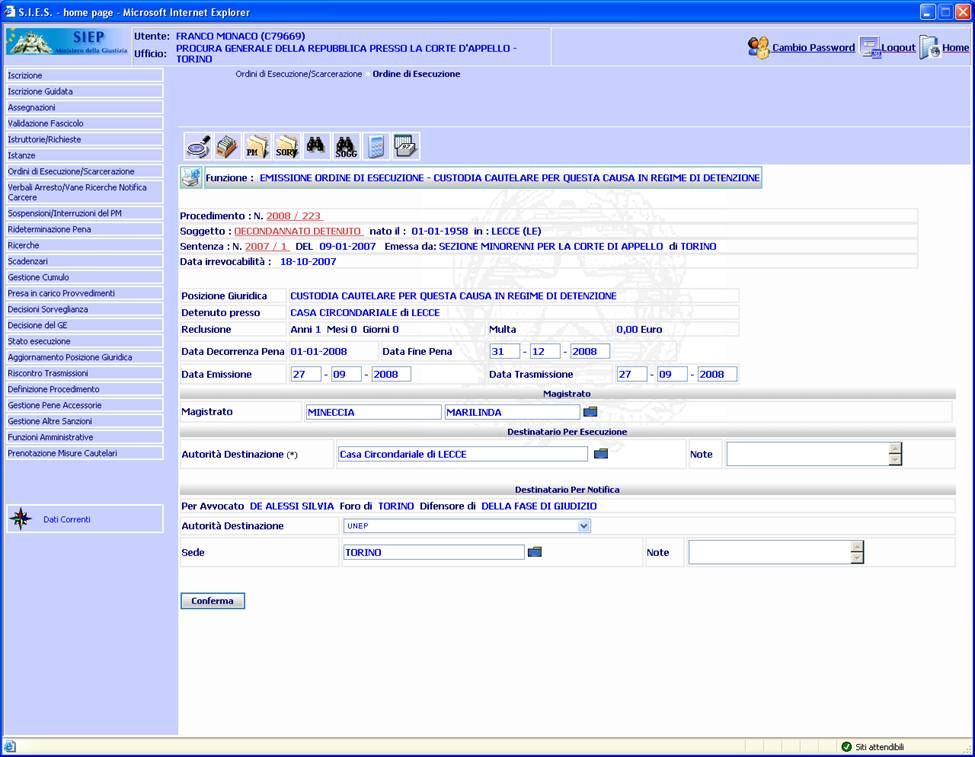

GENERALITA'
EMISSIONE ORDINE DI ESECUZIONE -
CUSTODIA CAUTELARE PER QUESTA CAUSA IN REGIME DI DETENZIONE: La
funzione, consente
di inserire e
registrare i dati
necessari per
l'emissione dell'ordine di esecuzione.
L'inserimento di un nuovo provvedimento consiste nel definire i suoi dati
identificativi.
LE MASCHERE VIDEO
La funzione in
esame viene realizzata attraverso l'utilizzo della seguente maschera, che
riporta gli elementi
descrittivi e operativi dell'ordine
di esecuzione.
La maschera è divisa nelle seguenti sezioni:
 |
Intestazione:
contiene dati
precompilati, che non possono essere modificati, relativi al Fascicolo,
al Condannato, alla Posizione Giuridica ed alla Pena
|
|
Magistrato:
nome del Magistrato che firma il provvedimento
|
|
Destinatario per esecuzione:
Autorità incaricata per l'esecuzione
|
|
Destinatario per Notifica:
riporta nei campi precompilati, il nome dell'avvocato o degli avvocati, il foro di appartenenza e il
tipo di difensore. |

Ci sono due tipologie
di campi: obbligatori e opzionali; i campi
obbligatori
sono contrassegnati con un asterisco.
COME FARE PER
...
Per inserire un nuovo
Ordine di Esecuzione l'utente deve:
-
Posizionarsi sulla
scheda Emissione Ordine di Esecuzione.
-
Introdurre i dati
obbligatori ed eventualmente i dati opzionali.
-
Confermare i dati
inseriti nella maschera agendo sul bottone
 .
.
CAMPI
I dati che
consentono di definire
un Ordine di Esecuzione sono i seguenti:
Sezione
Intestazione:
Oltre i campi precompilati, la sezione contiene i seguenti campi:
|
NOME |
DESCRIZIONE |
|
Data
Fine Pena |
Compilare il campo data
nel formato gg/mm/aaaa. Il sistema propone la data di Fine Pena
Calcolata in automatico. |
|
Data
Emissione |
Compilare il campo data
nel formato gg/mm/aaaa. Il sistema propone la data odierna. |
|
Data
Trasmissione |
Compilare il campo data
nel formato gg/mm/aaaa. Il sistema propone la data odierna. |
Sezione
Magistrato:
la sezione
contiene il seguente campo:
|
NOME |
DESCRIZIONE |
|
Magistrato |
Selezionare tramite la
cartellina blu
 il nome del Magistrato che firma l'Ordine di Esecuzione.
il nome del Magistrato che firma l'Ordine di Esecuzione. |
Sezione
Destinatario per Esecuzione:
la sezione
contiene i seguenti campi:
|
NOME |
DESCRIZIONE |
|
Autorità Destinazione* |
Selezionare l'autorità
tramite la
cartellina blu
. |
|
Note |
Compilare con testo libero se si intende aggiungere informazioni
supplementari. |
Sezione
Destinatario per
Notifica:
per ciascun
difensore presenta i seguenti campi:
|
NOME |
DESCRIZIONE |
|
Autorità Destinazione |
Selezionare l'autorità dalla
tendina. Il sistema propone "UNEP". |
|
Sede |
Inserire o selezionare
tramite la
cartellina blu
la
sede dell'Autorità di Destinazione. |
|
Note |
Compilare con testo libero se si intende aggiungere informazioni
supplementari. |
PULSANTI
Oltre ai
pulsanti orizzontali della maschera
principale è presente il pulsante
 di stampa del
contesto (videata)
facente parte del gruppo di
pulsanti di "Uso Comune"
di stampa del
contesto (videata)
facente parte del gruppo di
pulsanti di "Uso Comune"
|
PULSANTE |
DESCRIZIONE |
|
|
A
fronte di tale comando si apre una tendina dalla quale è possibile
selezionare la voce desiderata. |
BOTTONI
Oltre ai
comandi funzionali relativi al menù verticale sono presenti i seguenti comandi:
|
COMANDI |
DESCRIZIONE |
|
|
A fronte di tale comando, il sistema
dopo aver verificato la validità dei dati specificati, termina la
funzione con l'inserimento dell'Ordine di Esecuzione e la
visualizzazione della maschera
Dettaglio Ordine Esecuzione. |
CONTROLLI
A fronte della pressione
del bottone
, il
sistema verifica che:
-
I dati obbligatori, contrassegnati con l’asterisco,ed eventualmente gli
altri non obbligatori, risultino inseriti.
-
Le
informazioni inserite siano corrette e che non vi sono incongruenze nei
dati.
Se il sistema non riscontrerà errori verrà visualizzata
Dettaglio Ordine Esecuzione che contiene il comando di stampa.
N.B.:
Prima di emettere un Ordine di Esecuzione il sistema verifica che sia stata
eseguita la funzione
Calcolo Pena. Se il calcolo pena non è stato eseguito, il sistema
visualizza il messaggio

Agendo sul
bottone  verrà eseguita in automatico
la funzione
Calcolo Pena.
verrà eseguita in automatico
la funzione
Calcolo Pena.